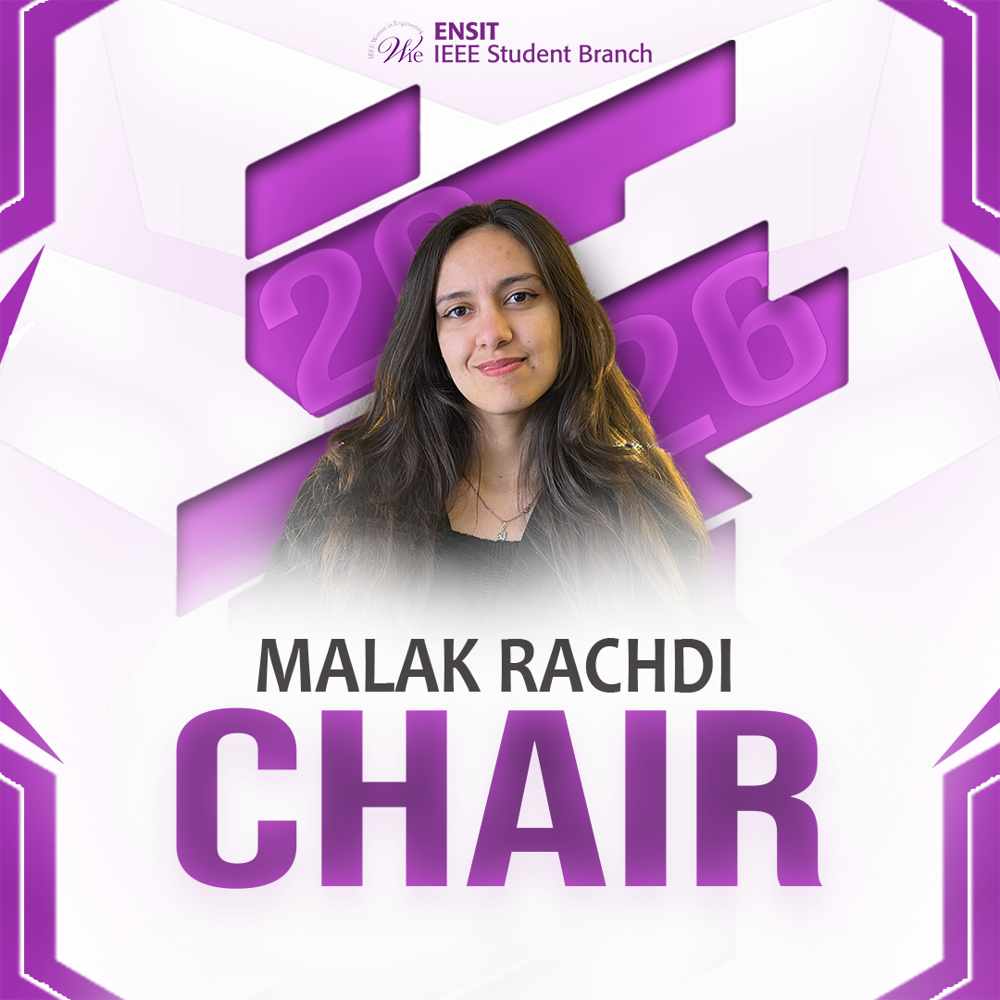
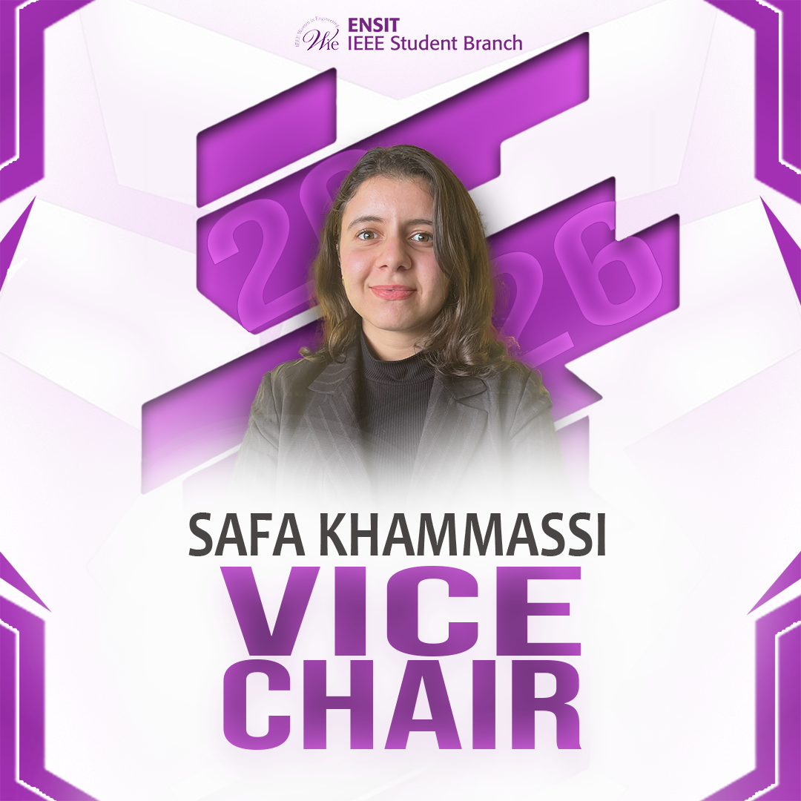
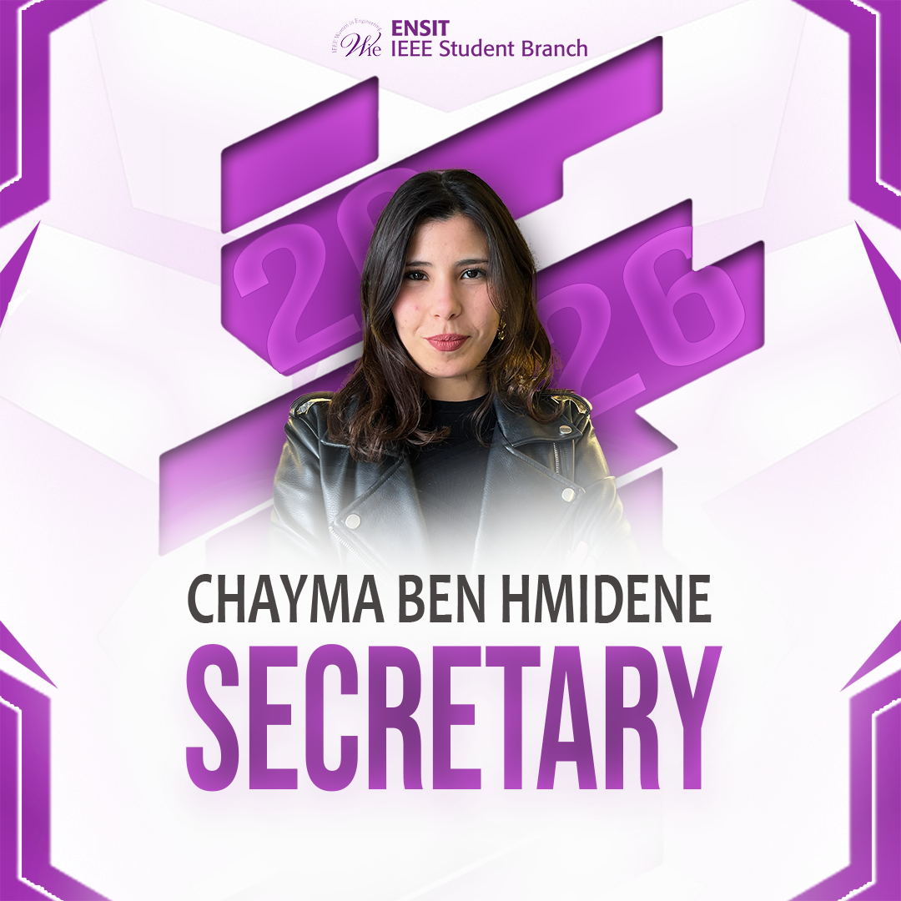
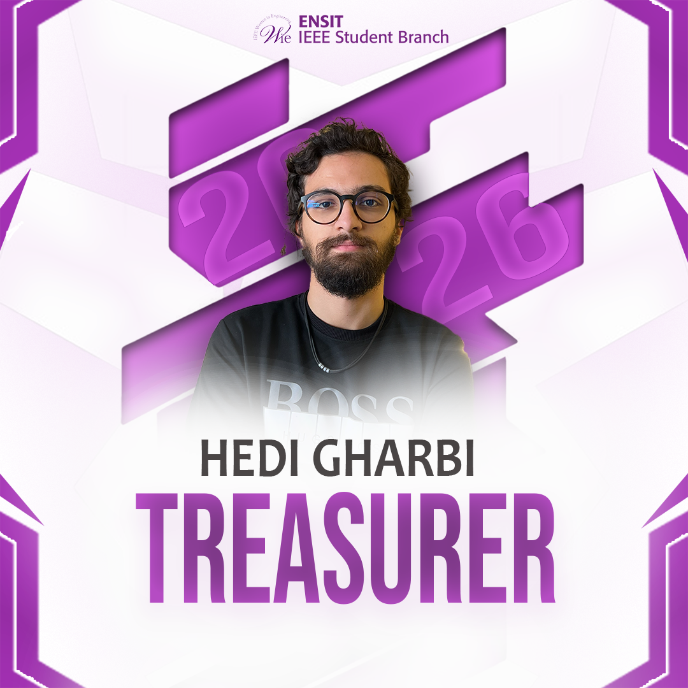
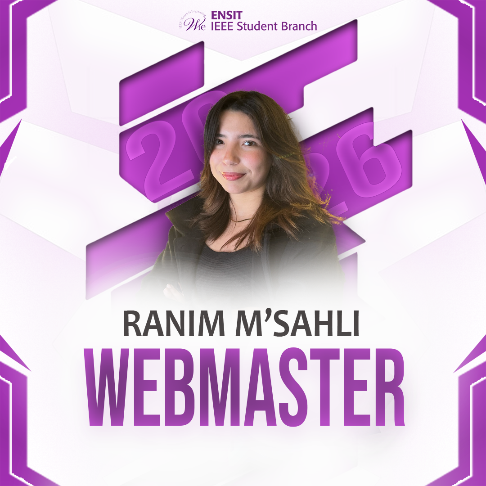

Mentorship
Build supportive relationships with peers, role models, and professionals who help you move forward.
 IEEE ENSIT
IEEE ENSIT
IEEE ENSIT / Chapter
Women in Engineering
WIE ENSIT is a community that supports women in engineering and STEM through mentorship, learning, leadership, and meaningful connections.
Discover WIEA community with purpose
An IEEE Women in Engineering chapter is a local community that encourages women and girls to pursue technical careers, grow their confidence, and shape the future of engineering.
At ENSIT, WIE creates a welcoming space where students learn from one another, meet inspiring professionals, and turn ambition into action. Everyone who believes in a more inclusive STEM community is welcome.
Our mission in action
Build supportive relationships with peers, role models, and professionals who help you move forward.
Explore technical and soft-skill workshops that turn curiosity into confidence and practical ability.
Take initiative, lead projects, and develop the voice you need to make an impact in engineering.
Inspire the next generation through community activities that make STEM feel possible for everyone.
The people behind the community





Learn, connect, make a difference
From STEM outreach to technical workshops, our events create opportunities to learn together and celebrate every path into engineering.